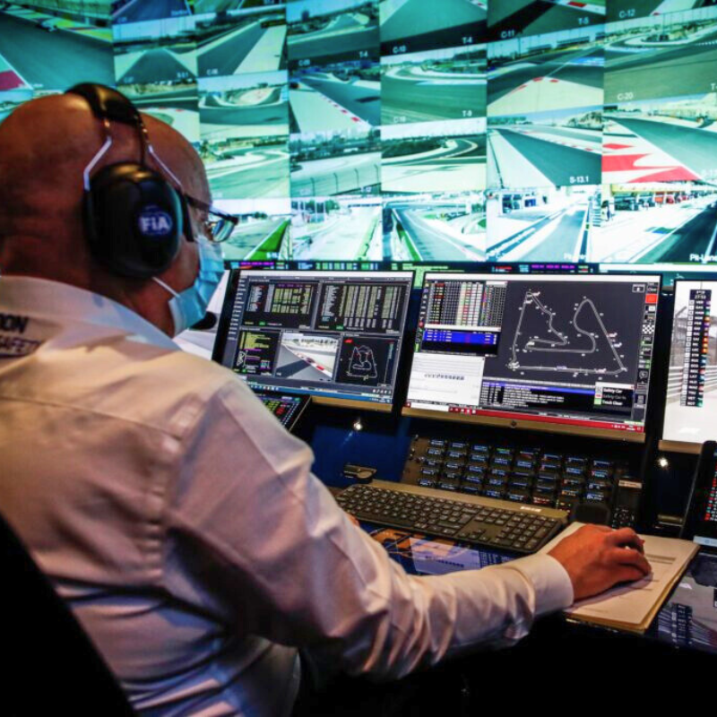

Un ingeniero de pista en la Fórmula 1 es responsable de gestionar el rendimiento del coche durante las carreras y prácticas. Su trabajo comienza antes del evento, cuando analiza los datos del coche y trabaja con los pilotos para ajustar la configuración del vehículo, como los frenos, la suspensión y la aerodinámica, basándose en las condiciones de la pista y las preferencias del piloto. Durante sesiones de práctica, clasificación y carrera, el ingeniero monitoriza el coche en tiempo real, observando los datos telemétricos para asegurarse de que todo funcione correctamente. Si el piloto menciona problemas, el ingeniero ajusta la estrategia y le da recomendaciones. Durante la carrera, el ingeniero de pista también tiene que tomar decisiones sobre la estrategia de neumáticos y posibles cambios en la configuración del coche según las condiciones cambiantes, que, en ocasiones, se acuerdan con el piloto. Además, debe coordinarse con otros miembros del equipo, como los ingenieros de simulador y de fábrica, para asegurar que el coche esté en su mejor forma. Y es que un ingeniero de pista es crucial para optimizar el rendimiento del coche y ayudar al piloto a tomar decisiones estratégicas durante la carrera.
Un ingeniero de desarrollo en la Fórmula 1 se encarga de mejorar y evolucionar el coche para que sea más competitivo, rápido y fiable en cada carrera. Su trabajo comienza en el diseño y la fabricación de nuevas partes del coche, como la suspensión, el motor, los frenos o la aerodinámica. Colaborando con el equipo de ingenieros de fábrica para desarrollar componentes que puedan ser probados en los entrenamientos o simuladores. Analiza datos de las pruebas, carreras y simulaciones para identificar posibles mejoras en el rendimiento del coche. Si, por ejemplo, los datos indican que el coche pierde rendimiento en ciertas curvas o condiciones, el ingeniero de desarrollo buscará soluciones como nuevas configuraciones o componentes mejorados que puedan optimizar el rendimiento. Su trabajo está relacionado con el de los pilotos y los ingenieros de pista. Ya que el feedback de los pilotos le sirve para entender qué partes necesitan cambios o ajustes.
Los ingenieros de soporte y análisis en la Fórmula 1 recopilan y analizan datos técnicos durante las carreras y pruebas. Se encargan de monitorear y procesar los datos telemétricos del coche en tiempo real (la temperatura del motor, la velocidad, el consumo de combustible o los neumáticos entre otros). Trabajan estrechamente con los ingenieros de pista, proporcionando datos que les ayudan a tomar decisiones rápidas durante la carrera. Además, colaboran con el equipo de desarrollo para identificar patrones en los datos que puedan indicar áreas de mejora en el coche, bien sea en rendimiento o en fiabilidad. También se centran en el análisis post-carrera. Revisan los datos recogidos para identificar qué funcionó bien y qué necesita ser optimizado. Estos análisis pueden influir en el desarrollo de futuras actualizaciones del coche.